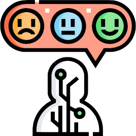

Ferramentas do sistema UI e UX:
principais ferramentas:
As principais ferramentas utilizadas pelo sistema ui e ux design, são ferramentas que nas quais são usadas para estes sistemas para facilitar o a criação do estilo do seu site.
Ferramentas UI:
Software de design vetorial amplamente utilizado para criar interfaces de usuário, wireframes e protótipos.
Ferramenta da Adobe para design de experiência do usuário, permitindo criar wireframes interativos, protótipos e designs de alta fidelidade.
Ferramenta de design colaborativo baseada na web, que permite a criação de interfaces de usuário, protótipos interativos e design de sistemas de design.
Ferramenta de design vetorial da Adobe, usada para criar elementos gráficos personalizados, ícones e ilustrações para interfaces de usuário.
Plataforma para criar protótipos interativos e colaborativos, facilitando o compartilhamento e a revisão de designs.
Principais ferramentas UX:

Plataforma para testes de usabilidade, permitindo que designers e pesquisadores observem como usuários reais interagem com um produto digital.
Conjunto de ferramentas para pesquisa de UX, incluindo testes de usabilidade, mapas de jornada do usuário e pesquisa de arquitetura da informação.
Ferramenta para análise de comportamento do usuário, oferecendo mapas de calor, gravações de sessões e feedback visual em tempo real.
Ferramenta para coleta de feedback do usuário em sites e aplicativos, permitindo capturar opiniões e sugestões dos usuários para melhorar a experiência.
Ferramenta de análise visual que ajuda a entender como os visitantes interagem com uma página da web, usando mapas de calor e dados de scroll.
Video util